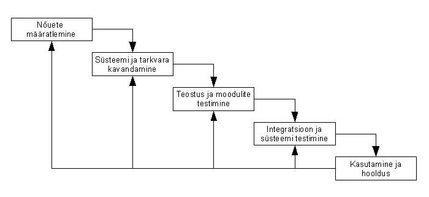

Waterfall arendusmudel
Waterfalli arendusmudeli kokkuvõte
Waterfalli arendusmudel on 70. aastatel välja töötatud arendusmudel, mis on suhteliselt jäikade etappidega. See on üks kõige kritiseeritum arendusmudel, sest ei luba eelnevasse etappi tagasi pöörduda kui on vaja näiteks protsessi vigu parandada. Tänapäevases maailmas ei ole sellel mudelil erilist kasutust, sest enamasti toote tellides ei suuda tellija tagada piisavat konkreetsust ja täpsust, mis oleks vaja arendajal, et arendada välja kliendi soovidele vastav toode. Selle arendusmudeli etapid on järgmised:
- etapp. Nõuete määramine ehk on vaja analüüsida süsteemi ja välja selgitada täpsed nõuded arendatavale tootele.
- etapp. Kavandatakse süsteem ja tarkvara, mida tootearendusel kasutama hakatakse. Dokumenteeritakse valitud tulemus.
- etapp. Toote teostus ja moodulite testimine - selles etapis programmeeritakse valmis eelnevalt dokumenteeritud süsteem moodulite ja programmide koguna ja neid kõiki testitakse eraldi.
- etapp. Integratsioon ja kogu süsteemi testimine - siin liidetakse ehk integreeritakse eelnevas etapis loodud moodulid ja programmid ning testitakse kogu süsteemi. Seejärel edastatakse toode kliendile.
- etapp. Kasutamine ja hooldus - Waterfalli arendusmudeli kõige viimane ja tihtipeale pikim etapp. Peale toote kasutama hakkamist tekkinud vigu muudetakse, vajadusel lisatakse uusi funktsionaalsuseid.
 |
| Head |
Vead |
| Konkreetne süsteem loogilise järjestusega. |
Liiga jäik - ei saa eelmisesse etappi tagasi minna. |
| Sobilik suurtele süsteemidele. |
Klient peab olema oma soovides väga kindel. |
Kasutatud materjal |